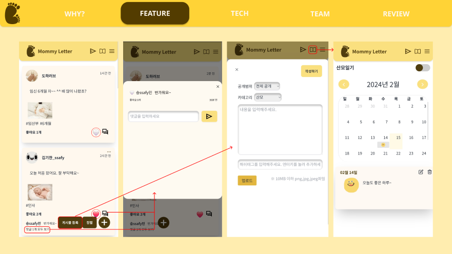

| 항목 | 내용 |
|---|---|
| 기간 | 2023년 1월 3일 → 2023년 2월 16일 |
| 태그 | Apache Kafka, Docker, Express.js, GitLab, JPA, Java, Jira, MariaDB, MongoDB, Nginx, React, SpringBoot, WebSocket |
| 한 줄 설명 | 임산부를 위한 SNS 모바일 웹 |
| 개발 인원 (역할) |
6명 (팀원) |
| Github | https://github.com/KimDohaAcc/MommyLetter |
아이중심적인 대다수의 임산부 어플과 달리 임산부 중심의 SNS 어플
특히 임산부의 90%에게서 발생하는 산후우울감 및 산후우울증을 관리할 수 있는 서비스를 집중적으로 구상
육아일기 및 임산부 일기를 작성하여 자신의 감정을 되돌아볼 수 있는 감정 다이어리
피드, 채팅 좋아요, 댓글, 팔로우 기능을 제공해 임산부끼리 소통할 수 있는 SNS
거동이 불편한 임산부가 정신과 진료 예약, 비대면 화상 진료, 처방전 발급이 가능한 비대면 진료 서비스
수유실 정보 API를 활용한 수유실 지도
기술 특장점
UI
DirectMessage, GroupChat, 화상 통화, 피드, 댓글, 좋아요, 해시태그 구현
[Kafka 및 MongoDB를 활용한 실시간 DirectMessage 구현]
Kafka를 사용하여 메시지 큐 및 이벤트 스트리밍을 구현하고, MongoDB를 데이터 저장 및 관리에 활용하여 안정적이고 확장 가능한 채팅 애플리케이션을 개발했습니다. 또한 STOMP를 사용하여 WebSocket을 통해 실시간 통신을 구현하여 사용자 간의 채팅을 가능하게 했습니다.
1:1 채팅 기능을 개발하던 중, 중반에 그룹채팅 기능을 추가해야 하는 상황이 발생했습니다. 저는 엔티티 설계를 고민하고 Kafka 관련 문서를 탐독하며 개념을 심도 있게 이해하고자 노력했습니다. 그룹채팅이 사용자 수만 다를 뿐 기존 채팅과 동일한 서비스가 요구된다는 걸 파악한 후 엔티티를 단일화하였습니다. 또한 Kafka 토픽을 1:1 채팅용과 그룹채팅용으로 분리한 후 메시지 리스너 코드를 수정하여 두 기능 모두에 Kafka를 성공적으로 적용할 수 있었습니다.